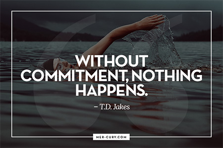
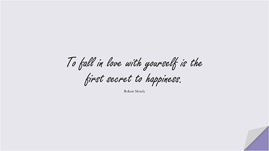
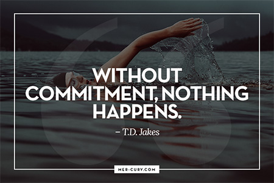
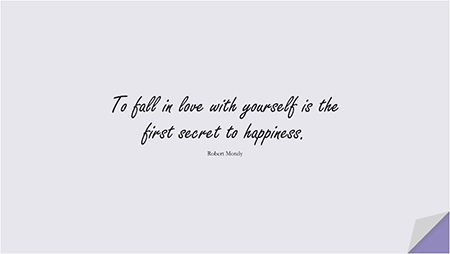

Module 05
Getting Engaged
EMBARKING ON GETTING ENGAGED
Duration: {{ audioDuration0501 * 1000 | date:'mm:ss' }}
This is a sacred journey with yourself — one that will forever change your life and your relationship with yourself.
You are about to get engaged! How cool is that?! You are on the threshold of major transformation. This commitment to yourself that you are embarking on is radical! That’s right — it's about opening to radical love for yourself.
Hailee Steinfeld - Love Myself
I am including Hailee Steinfeld's song "Love Myself" because it is a great, high energy impassioned song all about loving ourselves. When she says, “I don't need anyone else,” I invite you to think of it as claiming having everything you need within yourself.

PRINCIPLES FOR ENGAGEMENT
Duration: {{ audioDuration0502 * 1000 | date:'mm:ss' }}
- Your relationship with yourself is the primary beloved relationship, always, for all time.
- No one and nothing can ever take this away from you or diminish it.
- Loving others arises from loving yourself. Another relationship does not make you whole and complete. You are whole and complete onto yourself.
- Your engagement time puts you in high gear for courting yourself, listening to yourself, honoring yourself, prioritizing yourself.
- As you spend time with the course work online, see it as a way of re-charging your batteries.
- Remember, there is no divorce!
- From the moment you get engaged, you are committing to honor yourself as the most important partner life could offer -- yourself!
Dassy - Engagement
Assignment: Self-inquiry Questions
Duration: {{ audioDuration0503 * 1000 | date:'mm:ss' }}
(To Follow Along With Recording Above)
1. Write three words/adjectives to describe your relationship with yourself right now.
2. What are three loving actions that you want to commit to daily that demonstrate to yourself that you are in a loving relationship with yourself?
3. Imagine you are engaged to another person. How would you express your love to and for your fiancé? List at least four ways you would naturally show up for your partner in your engagement time.
4. Now, imagine bringing these messages and behaviors to yourself. Write them again, but this time, add in the beginning of the sentence, “I am open to give and receive...”
5. Now star two things that you listed that you want to commit to fully bring into action this month as you embark on getting engaged.
6. Is there anything you want to adjust, tweak, or totally change about your house so that your home serves you the best it can to provide a safe, protected and beautiful containment to deepen with yourself?
7. What self-love practices do you want to commit to doing during this modular? Each modular I suggest that you write down and commit to several loving actions that speak to you of being engaged to yourself.
8. Write three words/adjectives to describe how your want your relationship to be by the time you marry yourself.
Practice embodying them with a body posture
9. Write down one bottom line statement of what it means to you to be getting engaged to yourself today.
10. You can take this statement you just wrote and work with it to be your engagement vow. Take your time to get the right words for your proposal to yourself.
Get Ready For Your Engagement!
READY FOR YOUR ENGAGEMENT RITUAL?
Duration: {{ audioDuration0504 * 1000 | date:'mm:ss' }}
My Engagement to Myself
Dustin Graham's Engagement
Engagement Ritual: Create a puja, an alter, for your engagement. Allow there to be a mirror. You can decorate your sacred ritual space with flowers, candles, crystals, and other favorite meaningful objects.
Sit in front of your alter with a mirror before you. Be prepared with an offering you want to bring to yourself to anchor your engagement. There is no right or wrong way of doing this. It is totally yours. It is your statement to yourself. Your proposal. Your sacred exchange between you and you.
Look in the mirror and make eye contact. Breathe. Take your time. Be mindful. Don’t rush yourself. Propose and then offer and receive the representation of your engagement. Say out loud why you chose this specific object to represent your engagement. Hold eye contact. Then close your eyes. Move into Commitment Mudra Flow. After your three deep long breaths, open your eyes and look deep in thee and announce your engagement! “I am engaged to myself!” Breathe, feel it, celebrate it!
Examples of Engagement Proposal Statements:
With all my heart, I commit to being engaged to you, my beloved ________.
I commit to growing and arriving into the person I want to marry, comfortable in my own skin, confident in who I am, home in myself.
I promise to show up for me and bring acceptance to all of who I am.
I claim myself as home.
I commit to discovering that I am what I need and I have everything I need within myself.
I am enough.
I am beautiful, vital and precious.
I choose me.
I commit to bringing my full self to unveiling what it means to be my number one primary relationship.
Do I commit to being engaged to myself, as I approach marrying myself?
CONGRATULATIONS ON YOUR ENGAGEMENT!!! CELEBRATE YOUR YES....
A Powerful Quote
Duration: {{ audioDuration0505 * 1000 | date:'mm:ss' }}
PRACTICES FOR ENLIVENING YOUR ENGAGEMENT
~~ Every day (or at least week) write something to yourself -- a love letter -- even if it is a sentence... Or a photo or a drawing or a quote... in your journal.
~~ Practice the three behaviors you named in the Self-Inquiry exercise that demonstrate to you self-love.
~~ Daily Commitment Mudra Flow.
Commitment Mudra Flow
~~ Pay attention to your self-talk. Play detective. Write down what you have said that you want
to change and then practice turning this message around and intentionally writing the opposite
of the negative messages.
Affirm yourself!
~~ MIRROR COMMUNING -- Every morning when you look at yourself in the mirror, say something kind to yourself, make a declaration of love to yourself. "I am engaged to you. I commit to living in awareness of being engaged to you and treating you as my primary rich precious relationship"
~~ Write about what it means to be engaged and in beloved relationship with yourself. Remember, what you focus on, expands. How to grow more in love... with being you?
 


